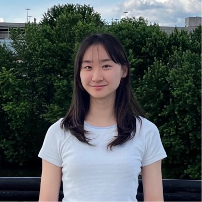

Undergraduate researcher and engineer with a focus on computer vision (image editing & object removal), generative AI, and AI agents. Passionate about automating complex workflows — from building evaluation pipelines to multi-agent systems.
Education
Mar 2022 – Feb 2027
Bachelor of Engineering
Sookmyung Women's University, Seoul
IT Engineering · Big Data Engineering (Double Major)
GPA 4.0 / 4.3
Skills
Experience
Jul – Dec 2025
NAVER Cloud
Image Vision Team Intern
Evaluation Metric Development & Pipeline Optimization
Mar – Jun 2025
ST Co., Ltd.
Database Documentation Intern
AI-Powered DB Standardization Pipeline
Sep – Dec 2024
SSSLab, Sookmyung
Undergraduate Research Assistant
Real-Time Stock QA for the Visually Impaired
Jul – Aug 2024
ETRI
Intelligent Devices Lab Intern
RAG-based Code Knowledge Base & Prompt Engineering
Mar – Jun 2024
Purdue University
International Scholar
Facial Attribute Editing via Multi-Modal DiT
Research
CVPR 2026 · EVGenFM & WiCV Workshop
ZCFD: A Depth-Aware Global Context and Hallucination Metric for Object Removal
Projects
Clothing Recommendation Service for the Visually Impaired
2025 – PresentCapstone project addressing the challenges visually impaired users face in online shopping, where image-centric interfaces make independent browsing nearly impossible. The system extracts tactile and style features from product images and review data using a texture-specialized ViT (fine-tuned Qwen3 encoder on Describable Textures Dataset), then applies domain adaptation to bridge the gap between training and real-world Amazon product data. Extracted features are fused with review text to power a personalized recommendation engine, delivered through a fully voice-based interface for accessibility.
Wehas — Multi-Agent AI Wedding Planner
Mar 2026 – PresentLangGraph-based multi-agent system automating wedding logistics (venue recommendation, reservation management), translating user requirements into end-to-end business workflows.